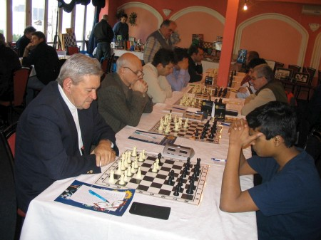
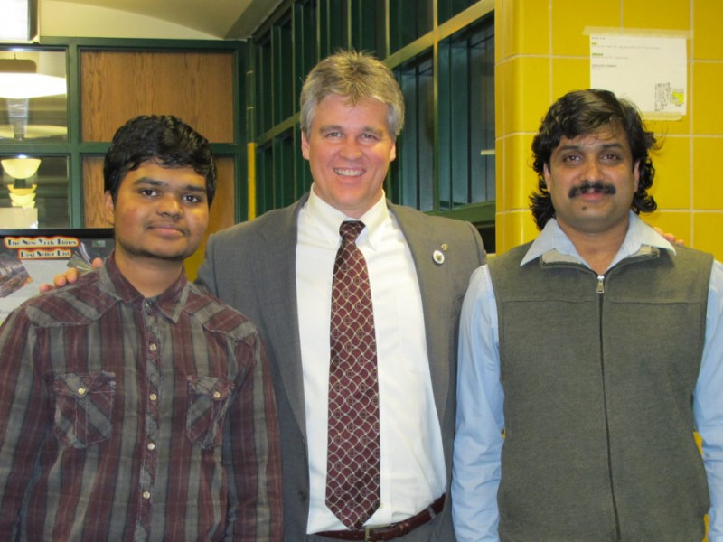
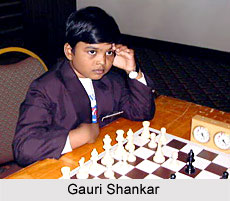

Achievements

- Became an International Master by his 16 years of age.
- Youngest ever Keralite to become an International Master.
- Youngest Indian to get the International rating at the age of 9.
- British Junior chess champion 2001, Scarborough, United Kingdom.
- Middle East under-16 Junior chess champion 2002, United Arab Emirates.
- North American Youth co-champion, United States, 2004.
- Runner-up in the US Junior Open, United States, 2005.
- Runner-up in the Chicago International Open (Expert Section), 2006.
- National Game 60 Chess Champion of the United States, 2006.
- Holder of 18 International chess medals at the age of 16 years.


- National Chess Champion of India for Under-7 boys 1999-2000, Aurangabad, India.
- British Junior Under-10 Chess Champion 2001, Scarborough, United Kingdom.
- The only hat-trick winner in the British Junior Chess Championship history.
- US National K-12 Quick Chess Champion 2003, Houston, United States.
- Space Coast Open K-12 Chess Champion 2004, Florida, United States.
- Winner of bronze in Dubai Junior Open 2004, United Arab Emirates.
- Winner of best Under-16 in the ATO Biel Chess Festival 2005, Switzerland.
- 2006 US Junior Open Chess Champion, Texas, United States.
- 2007 Biel International Youth Chess Champion, Switzerland in August.
- The youngest Indian to win more number of International Chess Medals - 27 medals in at 14.
